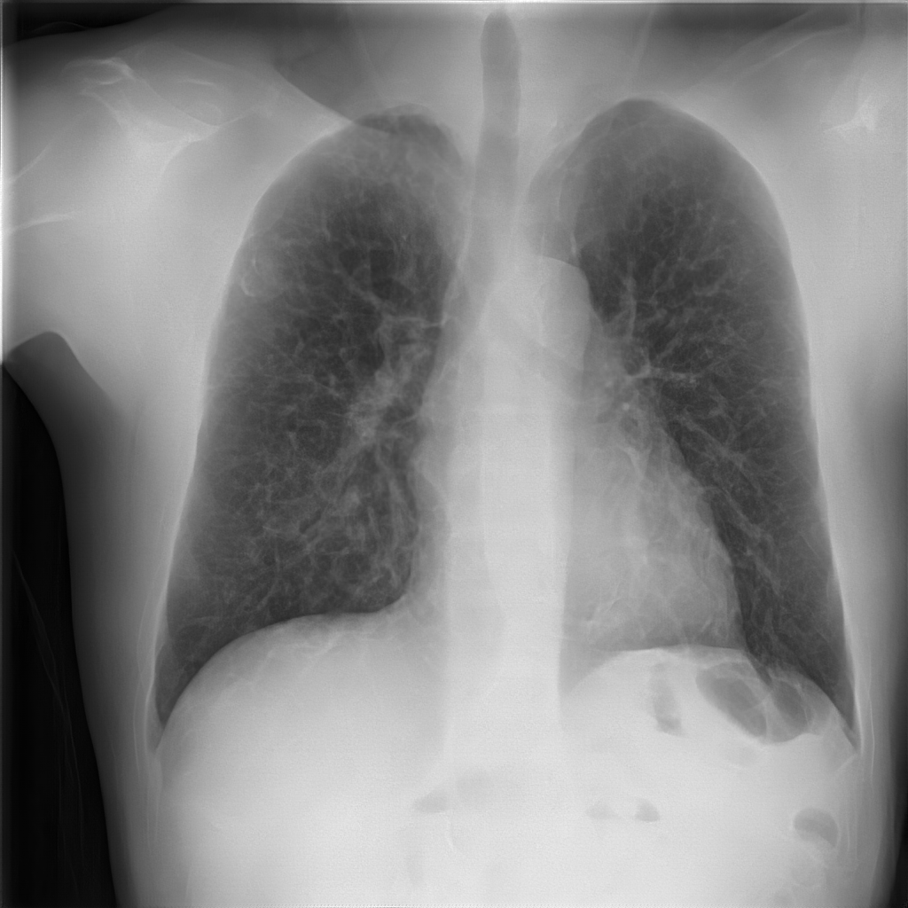
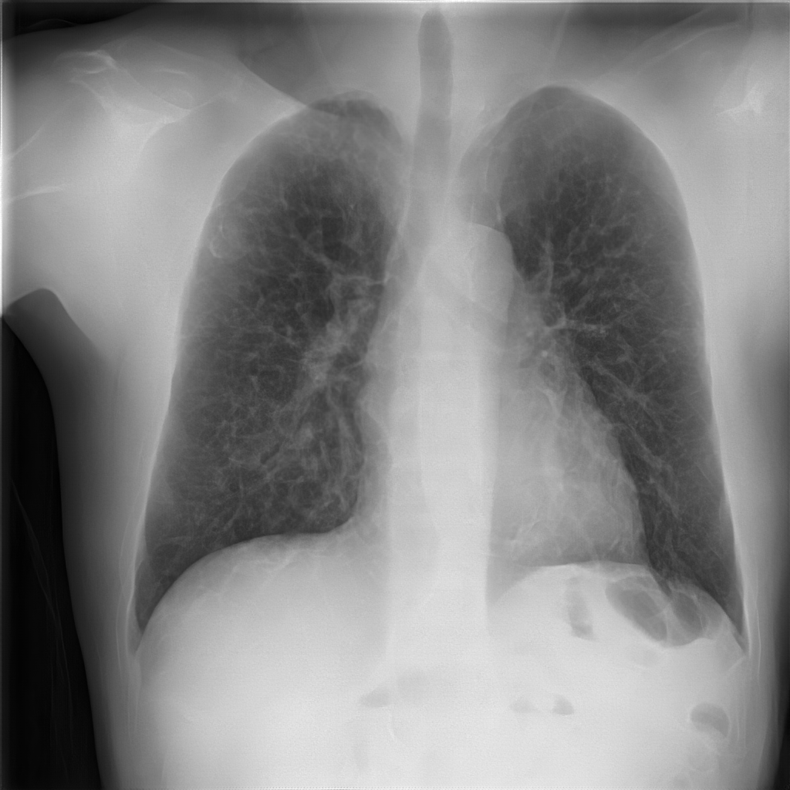

Chest X-Ray (CXR) imaging for pulmonary diagnosis raises significant challenges, primarily because bone structures can obscure critical details necessary for accurate diagnosis. Recent advances in deep learning, particularly with diffusion models, offer significant promise for effectively minimizing the visibility of bone structures in CXR images, thereby improving clarity and diagnostic accuracy. Nevertheless, existing diffusion-based methods for bone suppression in CXR imaging struggle to balance the complete suppression of bones with preserving local texture details. Additionally, their high computational demand and extended processing time hinder their practical use in clinical settings. To address these limitations, we introduce a Global-Local Latent Consistency Model (GL-LCM) architecture. This model combines lung segmentation, dual-path sampling, and global-local fusion, enabling fast high-resolution bone suppression in CXR images. To tackle potential boundary artifacts and detail blurring in local-path sampling, we further propose Local-Enhanced Guidance, which addresses these issues without additional training. Comprehensive experiments on a self-collected dataset SZCH-X-Rays, and the public dataset JSRT, reveal that our GL-LCM delivers superior bone suppression and remarkable computational efficiency, significantly outperforming several competitive methods. Our code is available at https://github.com/diaoquesang/GL-LCM.

| Method | BSR (%)↑ | MSE (10⁻³)↓ | PSNR↑ | LPIPS↓ |
|---|---|---|---|---|
| Universal Method | ||||
| VAE | 91.281 ± 3.088 | 1.169 ± 1.059 | 30.018 ± 2.007 | 0.237 ± 0.047 |
| VQ-VAE | 94.485 ± 2.407 | 0.645 ± 0.596 | 32.600 ± 2.071 | 0.137 ± 0.029 |
| VQGAN | 94.330 ± 3.402 | 0.923 ± 2.478 | 32.096 ± 2.420 | 0.083 ± 0.020 |
| Task-Specific Method | ||||
| Gusarev et al. | 94.142 ± 2.666 | 1.028 ± 2.201 | 31.369 ± 2.385 | 0.156 ± 0.031 |
| MCA-Net | 95.442 ± 2.095 | 0.611 ± 0.435 | 32.689 ± 1.939 | 0.079 ± 0.018 |
| ResNet-BS | 94.508 ± 1.733 | 0.646 ± 0.339 | 32.265 ± 1.635 | 0.107 ± 0.022 |
| Wang et al. | 89.767 ± 6.079 | 1.080 ± 0.610 | 29.963 ± 1.378 | 0.072 ± 0.016 |
| BS-Diff | 92.428 ± 3.258 | 0.947 ± 0.510 | 30.627 ± 1.690 | 0.212 ± 0.041 |
| BS-LDM | 94.159 ± 2.751 | 0.701 ± 0.293 | 31.953 ± 1.969 | 0.070 ± 0.018 |
| GL-LCM (Ours) | 95.611 ± 1.529 | 0.512 ± 0.293 | 33.347 ± 1.829 | 0.056 ± 0.015 |
| Method | BSR (%)↑ | MSE (10⁻³)↓ | PSNR↑ | LPIPS↓ |
|---|---|---|---|---|
| Universal Method | ||||
| VAE | 85.646 ± 9.327 | 1.224 ± 0.749 | 29.814 ± 2.364 | 0.155 ± 0.032 |
| VQ-VAE | 86.445 ± 8.881 | 0.986 ± 0.596 | 30.712 ± 2.273 | 0.062 ± 0.017 |
| VQGAN | 86.594 ± 8.916 | 1.002 ± 0.606 | 30.635 ± 2.255 | 0.061 ± 0.017 |
| Task-Specific Method | ||||
| Gusarev et al. | 89.283 ± 8.288 | 0.821 ± 0.570 | 31.700 ± 2.594 | 0.100 ± 0.024 |
| MCA-Net | 86.887 ± 9.825 | 0.876 ± 0.625 | 31.577 ± 2.905 | 0.057 ± 0.017 |
| ResNet-BS | 88.782 ± 8.905 | 0.960 ± 0.661 | 31.021 ± 2.576 | 0.060 ± 0.016 |
| Wang et al. | 89.679 ± 9.477 | 1.013 ± 0.655 | 30.681 ± 2.431 | 0.075 ± 0.015 |
| BS-Diff | 88.707 ± 8.859 | 1.003 ± 0.655 | 30.765 ± 2.504 | 0.154 ± 0.037 |
| BS-LDM | 89.322 ± 9.562 | 0.783 ± 0.632 | 32.307 ± 3.231 | 0.058 ± 0.017 |
| GL-LCM (Ours) | 90.056 ± 10.635 | 0.746 ± 0.680 | 32.951 ± 3.799 | 0.052 ± 0.015 |
BibTex Code Here 
